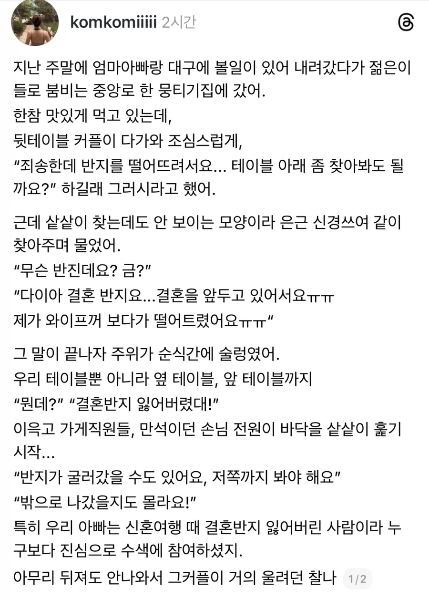

해피엔딩

해피엔딩
바닥 까면은 주인한테 반지 그냥 주고나와야디
신혼여행때 결혼반지 분실 ㅅㅂㅋㅋㅋㅋㅋㅋㅋ
뭉티기집은 가게를 뒤집어도 뭉티기가 그릇에서 떨어지지 않는다고 한다
나는 이 이야기를 좋아한다
뭉티기 아래 숨기면 평생 못찾겠네
그래서 뭉티기 밑이 어둡다 라는 말이 있나봐
뭉티기는!!! 원래 많이 쓰는 말이라고!!!!
경남이며ㆍ "믄데" "갤혼반지 이자삣단다" 할텐데, 경북은 어떻게 함?
으자 들싸바라
자들 와저라는데?
결혼반지 흘맀다카든데
뭣 결혼반지를 잃어버려? 저 남자를 살려야한다!
조상신이 도왔는데 그걸 찾네 ㅋㅋ
바닥 깠다는줄 알았네